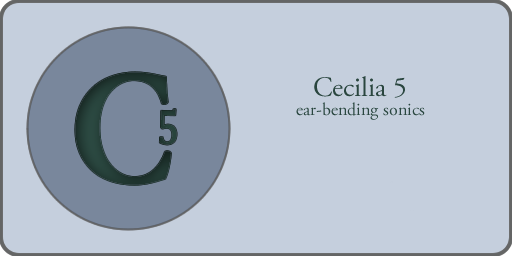

Cecilia 5.4.1 documentation¶
{kind=link}
Welcome to the Cecilia 5.4.1 documentation!
Cecilia is an audio signal processing environment. Cecilia lets you create your own GUI (grapher, sliders, toggles, popup menus) using a simple syntax. Cecilia comes with many original builtin modules for sound effects and synthesis.
Cecilia uses the pyo audio engine created for the Python programming language. Pyo allows a powerful integration of the audio engine to the graphical interface. Since it’s a standard python module, there is no need to use an API to communicate with the interface.
The graphical user interface¶
The audio processing tools available with Cecilia¶
- Documentation of Built-In Modules
- Dynamics : Modules related to waveshaping and amplitude manipulations
- Filters : Filtering and subtractive synthesis modules
- Multiband : Various processing applied independently to four spectral regions
- Pitch : Modules related to playback speed and pitch manipulations
- Resonators&Verbs : Artificial spaces generation modules
- Spectral : Spectral streaming processing modules
- Synthesis : Additive synthesis and particle generators
- Time : Granulation based time-stretching and delay related modules